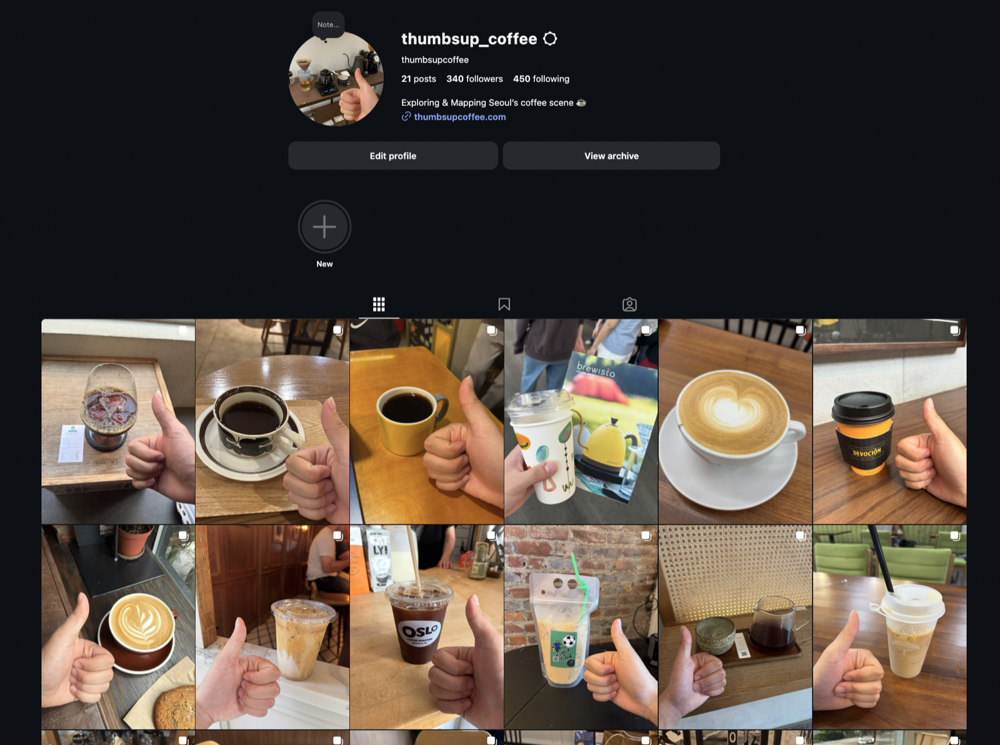

01 / Environmental
Environmental sustainability
Spread:Seed nonprofit and marine biopolymer research.
50+members
$5,000+to enviro. orgs
SilverKSEF medal
Come take a sip of what
I’ve been brewing.
01 / Environmental
Spread:Seed nonprofit and marine biopolymer research.

02 / Social
Independent cafes vs. franchise expansion in Seoul.

03 / School
TIGERCLUBS.ORG and student council.

04 / Brew logs
Every pour logged, barista work at Cafe Awake, and flavor lab work at Samjung.